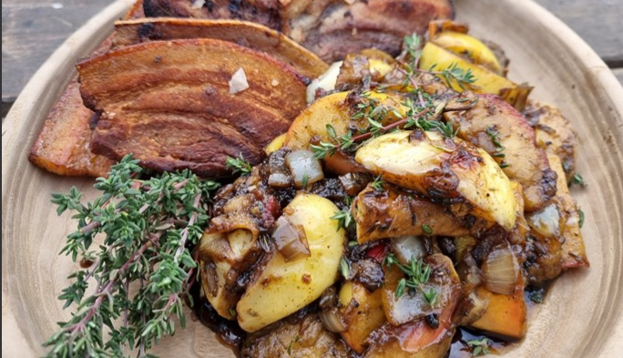

The Viking Apple And Pork!
Description:
The fallen warriors staying in Valhalla, the einherjer, enjoy a feast every day. The boar Sæhrimnir is slaughtered and eaten every night. And right after, he comes back to life and so provides Odin's warriors with an infinite feast. The combination of apple, pork and onion goes way back in Danish food history. A recipe for Æbleflæsk (Apple pork) can be found in the first Danish cookbook printed in 1616. We don't know if the Vikings had the combination, but apples, onions and pork were definitely all at hand. And the Vikings did love their pork. Pig bones have been found in many excavations. Apple and pork is a traditional dish eaten at Yule in Denmark (but it actually tastes good all year round). This is the Viking apple and pork!:
Ingredients
- 4 sour apples sliced in 'boats'
- 2 chopped onions
- Butter
- Water ca. 1.5 litre
- ca. 8 slices of smoked pork/bacon
- Butter for frying
- 4 sprigs of fresh thyme
- 2 tsp dried thyme
- Salt
- 1 tbsp honey
- An axe
Steps
- Fry the pork slices in butter in a hot frying pan
- Sprinkle with salt and cook until golden on both sides
- Remove the pork from the pan and set aside
- Now fry the onions in the pork fat for a couple of minutes
- Then add the apples and stir every now and then
- Let the apples cook until the desired consistency, about 10-15 minutes depending on the sort of apple
- Add the honey and sprinkle with salt. Stir to glaze the apples. Be careful not to burn the honey
- Serve warm and have a piece of rye bread with your apple and pork